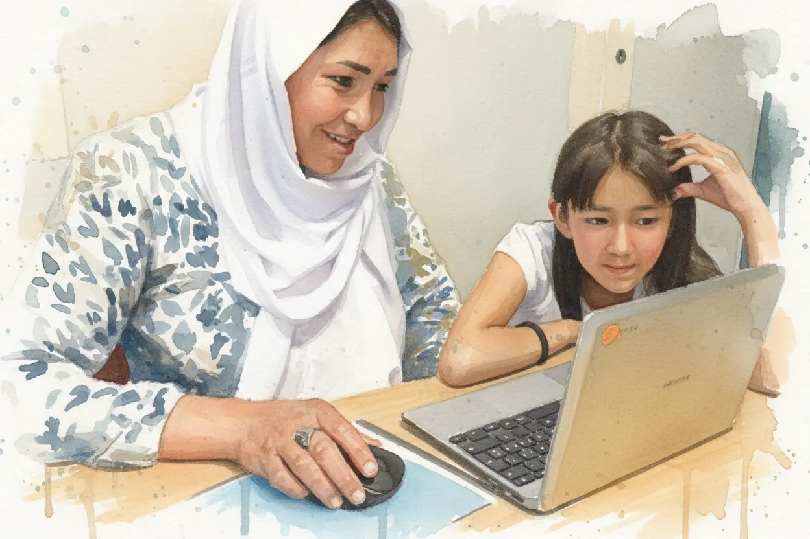
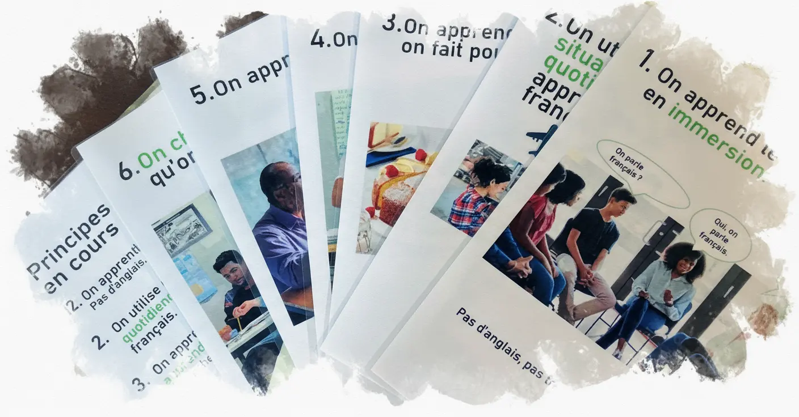
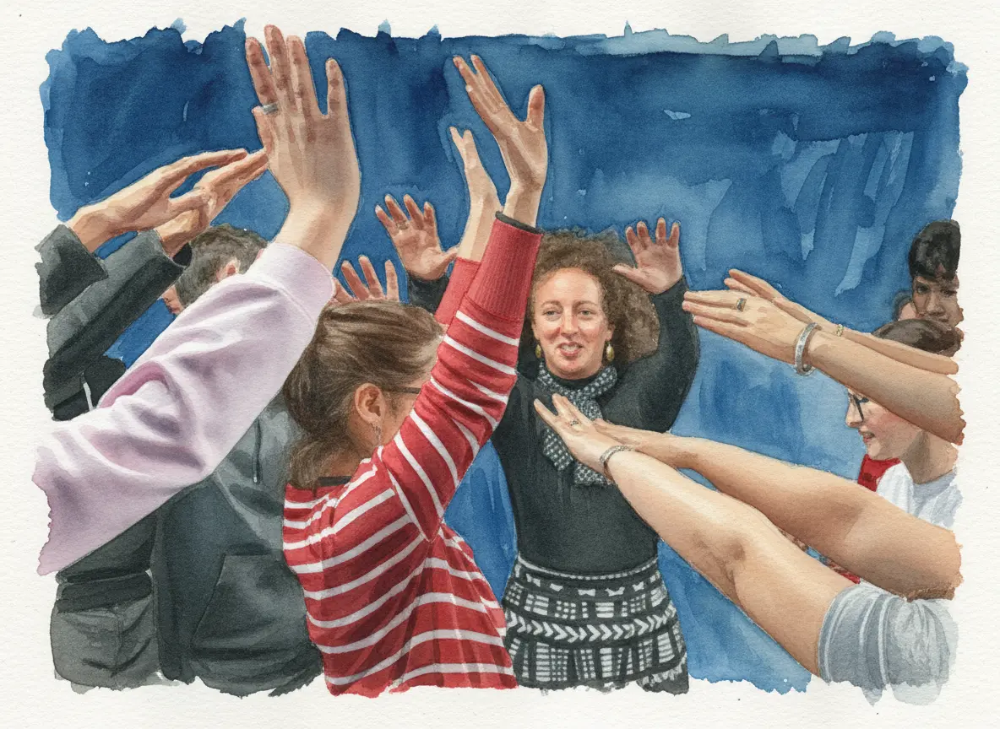

Association Confluences · Lausanne
Des liens qui se tissent, un avenir qui s’esquisse.
Depuis 2017, nous accompagnons les personnes migrantes vers l’autonomie : apprendre le français, trouver sa place dans le canton de Vaud, rencontrer des gens d’ici.
Par où commencer
Suivre un cours de français
Cours intensifs en classe à Lausanne, ou à distance depuis chez vous. Avec bureautique, ateliers et aide à la recherche d’emploi.
Les cours J’oriente une personneAssistant·e social·e, conseiller·ère ORP
Vous accompagnez une personne qui pourrait suivre nos mesures ? Contactez-nous pour connaître les places et les modalités.
Nous contacter Je veux m’engagerDonner de son temps
Parrainer une personne nouvellement arrivée, animer un atelier de français ou accompagner une sortie.
Bénévolat et parrainageNotre mission
Cinq axes pour une même autonomie
Les cinq rayons de notre logo, ce sont nos cinq façons d’agir. Elles se rejoignent, comme des rivières : d’où notre nom.
Découvrir l’associationConcevoir des formations pour l’insertion socio-culturelle et professionnelle
Développer des réseaux de contact avec la société d’accueil
Participer au débat public sur la migration
Réaliser des projets culturels qui font du bien
Dialoguer avec la recherche académique
Nos mesures
Deux façons d’apprendre le français
Des cours de niveau A1 et A2 qui vont au-delà de la langue : bureautique, ateliers, accompagnement individuel.

Français & Intégration
Cours intensifs à Lausanne, avec activités bénévoles, stages découverte, sorties culturelles et aide à la recherche d’emploi.
En savoir plus →
Français en Télécours
Cours sur Zoom et visites à domicile, pour les personnes qui ne peuvent pas se déplacer : parents de jeunes enfants, proches aidant·e·s…
En savoir plus →Sessions 2027
Français & Intégration et Télécours suivent le même calendrier.
- Session 14 janvier – 25 mars
- Session 25 avril – 24 juin
- Session 35 juillet – 23 septembre
- Session 44 octobre – 23 décembre
Aussi chez Confluences
Projets et formations

Cours intensifs pour l’EVAM
Des classes mixtes, toutes origines et générations confondues, depuis 2023.
En savoir plus →
Projets culturels
Théâtre-Récit, projections documentaires : prendre la parole en français, devant un public.
En savoir plus →Formation de formateurs·trices
Modules de formation continue en didactique du FLE / FLI, avec Français en Jeu.
En savoir plus →Parrainage
Une rencontre, deux mondes, un partage
Le parrainage met en lien une personne qui vit en Suisse et une personne réfugiée nouvellement arrivée. Vous choisissez ensemble votre rythme ; nous restons là pour conseiller.
Ils nous mandatent, nous soutiennent ou travaillent avec nous
Nos partenaires
Une question, une inscription ?
Écrivez-nous ou appelez-nous : nous vous orientons vers le cours ou l’activité qui convient.